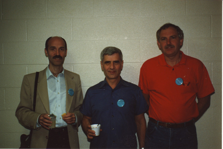

|
|||||||||||||||||||||||||||
An article from "Mathematics Competitions", Vol 4, No 2, 1991, pp. 28-41.BIRTH OF THE TOURNAMENT OF TOWNSN.N. Konstantinov, J.B. Tabov and P.J. TaylorFrom left Jordan Tabov, Nikolay Konstantinov, Peter Taylor at the WFNMC Conference, University of Waterloo, Canada, 1990, where this paper was first presented in a plenary session. ABSTRACT: The Tournament of the Towns is an international mathematics problem solving competition founded in the Soviet Union in 1979. This paper outlines the history of the competition, its rules and philosophies, its extension to other countries, now including the West, and future goals. HISTORYThere was a flourishing growth of mathematical life in the Soviet Union in the 1920's and 1930's. There were two main centres, Moscow and Leningrad. The history of this prosperity and the following gradual decline is an interesting subject. It is important to mention here the consequence of the abundance of powers of the young mathematicians in both Moscow and Leningrad, particularly with regard to their relationships with mathematical olympiads, mathematical groups (of pupils) and special mathematical schools. One of the manifestations of this energy was the All-Union Mathematical Olympiad, which has held from the beginning of the 1960's (more formally from the 1960's), when the influence of the initial development still existed. These Olympiads were annual meetings of talented pupils together with their teachers, working with them in groups. The Chairman of these Olympiads was AN Kolmogorov. He formed a jury consisting of mathematicians mainly from Moscow and Leningrad. He was very much the master of these Olympiads and organised them as he felt necessary. (One of the co-authors of this paper, NN Konstantinov, was a member of this jury from 1969 to 1979.) The Ministry of Education supported these Olympiads by providing transport, venues, facilities and sustinence. After some years it became clear that there was a problem with the format of these Olympiads. The number of participants from leading centres such as Moscow and Leningrad was too small. In Moscow this led to strong competition between the highly talented pupils (who had to prequalify through the Moscow Olympiad, and knowing that participation in the IMO would enable the bypassing of entry formalities into Moscow State University). The mathematicians in the jury understood the lack of logic in this situation and tried to increase the quota of students from Moscow, Leningrad and Ukrainia, but met opposition from the Ministry of Education. A conflict commenced, and Kolmogorov's jury was eliminated in 1980. At that time, parallel to the All-Union Mathematical Olympiads, a new form of mathematical competition appeared. Kolmogorov's jury organised a competition for the pupils from Moscow, Leningrad, Kiev and other cities which did not participate in the All-Union Olympiad. This competition took place simultaneously with the All-Union Olympiad. Later, this competition was increased to take place twice yearly - November and March. It was called Tournament of the Towns. The Tournament of the Towns was originally unofficial. There were even attempts from some quarters to close it down. However in 1984 official status was received when Vice-President of the USSR Academy of Sciences T Velihov and the Tournament of the Towns Chairman, Academician VS Pugachev, signed an order to establish the committee. It can be seen from the above that the Tournament started as a competition for pupils from a number of large cities. But soon the jury invited some smaller towns. The competition has played a special role for the small towns, which are able to compete on an equal basis because the towns' scores are adjusted according to their population. (Basically a town's score is based on N papers, where its population is N00,000. A minimum of 5 papers is required but towns with population less than 500,000 receive a further compensating adjustment.) The system enables small towns to get out of their provincial isolation and to feel that they are participants in an important event. PERSPECTIVESThe Tournament of the Towns started as a small event. It was organised by a small group of volunteers who worked in their spare time. The Tournament has now become large and we are starting to become aware of other good things which can be done under the Tournament's umbrella. It is possible to plan for a Greater Programme of the future. For the realisation of this programme two kinds of resources are necessary, intellectual and material. The situation is that we do not have enough material resources, and consequently the intellectual resources we have can not be used to their maximum capacity. The whole enterprise can be envisaged in the following way, as seen from the Moscow point of view. Some of the activities described here may be inappropriate in other countries but the following plan does indicate the philosophy of the greater Tournament and things which are being done. THE "GREATER PROGRAMME"The foundations of the Tournament are the Universities whose staff organise the Tournament in their region (presumably the Universities also have an interest here in that talented students may later enrol with them). Typically there may be other Olympiad programmes which also exist (in fact their organisations may complement the Tournament). There are groups of mathematics pupils, and some lectures are held for them. There are periodical magazines and brochures are published on the materials of these lectures and the groups. Magazines are distributed amongst the potential and actual participants of Mathematical Olympiads and the groups. Correspondence groups are operated for Soviet and foreign students. Their members come to Moscow at regular times for monthly study meetings. Teachers also attend these meetings. An internationally approved set of exams is set up for "maths pupil", "maths student" and "maths teacher". Winners of the Tournament gather at a summer conference where advanced problems are solved. (Such conferences have been conducted for the past two years in Estonia, while 1991's conference has been scheduled for Beloretsk, in the Ural Mountains.) At this time the conference of leaders is also held. The problems considered by this conference can be the subject of popular publication, distributed among pupils. Additional to all this it should be possible to organise social and other activities. Examples of these activities which have been held include tourist trips, musical activities, construction groups (such as the group which went to the Moscow University Biological Station on the White Sea), work on Estonian collective farms and the organisation of an ecologist school in the Novgorod region for a nature excursion under the leadership of pupil biologists. In these situations mathematicians have shown their ability to work in a difficult situation together. To achieve this programme one needs several positions for qualified mathematicians (similar to tenured University Faculty positions). These mathematicians would perform pedagogical, scientific and administrative work. Also needed are computers, printers, copiers, e-mail and office space. Mathematics students at Universities make a significant contribution, and should be compensated for their work. This is about as far as we can probably look ahead, but all of these things are being looked at in the immediate future. INTERNATIONAL PERSPECTIVESWe now present perspectives of the competion from two other countries. Outside the USSR, Bulgaria and Australia are the only two countries to have national committees. The Tournament is also conducted in some Eastern European cities and Hamburg recently entered successfully. There have also been signs of interest from several other western cities and some in South East Asia. This organisation could well become a second international organisation, complementary to the IMO. BulgariaThe Bulgarian participation in the TT began in 1984-85, when the town of Yambol took part. At that time Yambol had a leading position in terms of having talented pupils in Bulgaria and regular contributions of winners of the Bulgarian National Olympiad and IMO team. The high level of Yambol's pupils was a result of a well organised, active working group of school teachers. The first results of the participation of Yambol in the TT were encouraging. Yambol was among the top towns in the Tournament. After this other Bulgarian towns, including Ruse, Varna, Plovdiv, Sofia and Stara Zagora, joined the Tournament. In each of these towns the participation was organised by a local committee, usually consisting of school teachers. Briefly, the aims of these committees were to invite more pupils with interests in mathematics and who were possibly well prepared in solving difficult non-standard questions, to organise and ensure the venue for the competition, and to make a preliminary assessment of the pupils' papers.All of this work was familiar to Bulgarians. In Bulgaria mathematics competitions are very popular, and in fact the organisation of the TT in Bulgarian towns proved to be satisfactory. According to the rules, after the preliminary local checking of the papers, the best pupils' papers were sent to Moscow for coordination by the Moscow committee. The problems of the TT are non-standard, of a type different to Bulgarian traditions. However the style of problems is familiar to teachers and students through the journal Kvant, which is easily available in Bulgaria (about 5000 subscribers). Some difficulties arose with the translation of the problems, mainly because of their sometimes non-standard and long formulation. A real problem for the TT in Bulgaria was the including of the Tournament in their "Calendar of National and Local Competitions". From this point of view, the date of the Spring round (15-20 March) is not suitable for our towns. We would prefer a date in the region of 1-15 March. The participation in the TT of a group of Bulgarian towns naturally led to the idea of organising a national committee in Bulgaria, with representatives from each participating town. This committee was founded in 1986 and its first purposes were
Since 1989 the national committee has started
Some future problems of the TT, from the Bulgarian viewpoint are
AustraliaAustralia first received an invitation to enter the Tournament of the Towns in July 1988. The city of Canberra was considered the most appropriate to test the viability of such an entry. This was because Canberra had the organisational infrastructure. For example, Canberra is the headquarters of the Australian Mathematics Competition, which attracts about 400,000 entries from Australian students, or about 32% of the eligible secondary school population, each year, and had hosted the 1988 International Mathematical Olympiad. Furthermore, mathematicians from Universities in Canberra had conducted Friday evening enrichment sessions for secondary students for a period of 25 years. When the invitation was received, the Friday evening sessions were already closed for the year. However, a group of students was invited to a single training session (a small number of past questions had been translated into English), and entered the (northern) Autumn round of the tenth Tournament of the Towns in November 1988. The results of Canberra's entry in the tenth Tournament of the Towns was very encouraging. Canberra's results were above average, an effort considered highly commendable for a first attempt. One student was also awarded a Diploma for an outstanding individual effort. Canberra's success came under notice from the Australian Mathematical Olympiad Committee. Most University towns in Australia have some mathematicians who work hard to enrich the knowledge of local secondary students, and have an affiliation with the Australian Olympiad Committee. They now see the Tournament of the Towns as providing an excellent opportunity to give their local students valuable experience in advanced problem solving as well as giving them an opportunity to share something in common with students from distant countries. As a result, further Australian cities entered the eleventh round of the Tournament, which concluded early in 1990. These cities were Hobart, Melbourne and Newcastle. Several other cities are planning to enter the twelth round. An Australian National Committee has been formed to administer Australia's entry. Formerly consisting mainly of Canberra mathematicians, the committee has now been restructured to include representatives from each participating town. MATHEMATICAL ENRICHMENT CENTRESFor over 25 years mathematicians from the Australian National University (ANU, the older of the two Universities in Canberra) have run enrichment classes on Friday nights for all interested high school students. Participation in the Tournament of the Towns has had a profound change in the organisation of these evenings. Recently mathematicians from the ANU and University of Canberra (UC) have formally set up an enrichment centre. All students are welcome to attend the open sessions, which run from Term 1 through Term 3. We have now set up a second group, called the invitational group, which meets through all four terms. This group currently has about 15 students, and their membership is reviewed annually. It is essentially the group which enters the Tournament of the Towns, which is held during Terms 1 and 4 of the Australian academic calendar. During these terms the students are further split into a junior and a senior group and essentially have practice at problems from past papers. During Terms 2 and 3 the students meet as one group and have lectures by various mathematicians on topics which they are likely to find useful when entering competitions. These students are high achievers who demand more than they can get out of the normal syllabus. The schools cooperate very strongly in the organisation of these sessions and are only too willing to release the students for a day, say, when writing the competition paper. Similar groups operate in other cities, with their organisations varying slightly due to geographic layout of the city and the needs of the instructors. There are some very dedicated instructors organising these groups, and sometimes they are limited by lack of support from their University colleagues. THE PROBLEMSAustralia's students and teachers have, like their Bulgarian counterparts, found the problems to be formulated in a manner different than usual to them. They have also found the problems to be challenging, and in some cases very difficult. They are often tests of sheer problem solving ability rather than technical questions depending on syllabus knowledge. Professor Konstantinov discussed the creation of the Problems in his article on the Tournament which appeared in the first English language edition of Kvant, viz Quantum. In this article he stated Some of the new problems are real masterpieces - beautiful discoveries in miniature that will be remembered for a long time by the contestants (whether they solved them or not) and will undoubtedly become part of the classical folklore of math competitions.
The authors of many of the best problems are past winners of various contests - Moscow, Leningrad, Riga, and national math olympiads as well as the Tournament of the Towns itself. Most of the authors are connected with "Kvant" in some way or another - as subscribers, readers, authors, or editorial board members. It's traditional in the Soviet Union to send new mathematics problems to "Kvant", where a highly competent team of problem specialists, headed by N.B. Vasiliev, picks out the best ones to use in the Tournament of the Towns or publish directly in "Kvant"'s problem section. It would seem that many of the old problems are already part of the established folklore. The following are two particular favourites, both for their style and character as much as for the underlying mathematics involved. Both are taken from the (northern) Autumn 1984 round.
It is expected that at this conference (the first conference of the World federation of National Mathematics Competitions, in Waterloo, Canada) there will be discussion about widening the organisational base of the Tournament to reflect its growing international status. This may be inevitable, but hopefully nothing will happen to diminish the role of the people who are already proving so successful in the problem creation area. PAST PAPERS AND SOLUTIONSA book with many past problems translated into English, together with strategy essays and solutions has been published in Australia. A more complete work is now in preparation, and this should be ready in about a year. This is being done in association with several mathematicians of the University of Canberra, and Dr Andy Liu, of Edmonton. ORGANISATIONAL MATTERSAustralian students and teachers have found their association with the Tournament a most interesting and rewarding experience, the Tournament is firmly established. However there are some difficulties which have been encountered, and this is a list of some as seen at this time.
With the growth of the Tournament to other countries in recent years the organisers have experienced some difficulties which may not have been foreseen. Papers are marked by students of the Moscow State University. When further juries can be established some of the workload for these students can be eased. There would still need to be some form of central assessment however to supervise uniform standards. It does seem that the main difficulty experienced is in a lack of hardware. In order to get the questions and solutions out and process the results the organisers have a need for PC's (presumably of AT or higher standard), printers (LQ or laser standard) and photocopying equipment. The organisers are hoping for direct assistance in this respect from the west. In Australia, direct help is very difficult. The enrichment programs in various cities rely solely on volunteer help, and in general do not even have a bank account. In the past the organisers have not charged an entry fee. However most Australian students expect to pay an entry fee of approximately $2 to enter other competitions. I would suggest that an entry fee charged throughout the western countries of this sort of figure could well raise a figure sufficient to help in this respect. CONCLUDING REMARKSAustralia's involvement in the Tournament of the Towns has been a most rewarding experience. The positive features have been
|
|||||||||||||||||||||||||||
|
|||||||||||||||||||||||||||
 |
|||||||||||||||||||||||||||